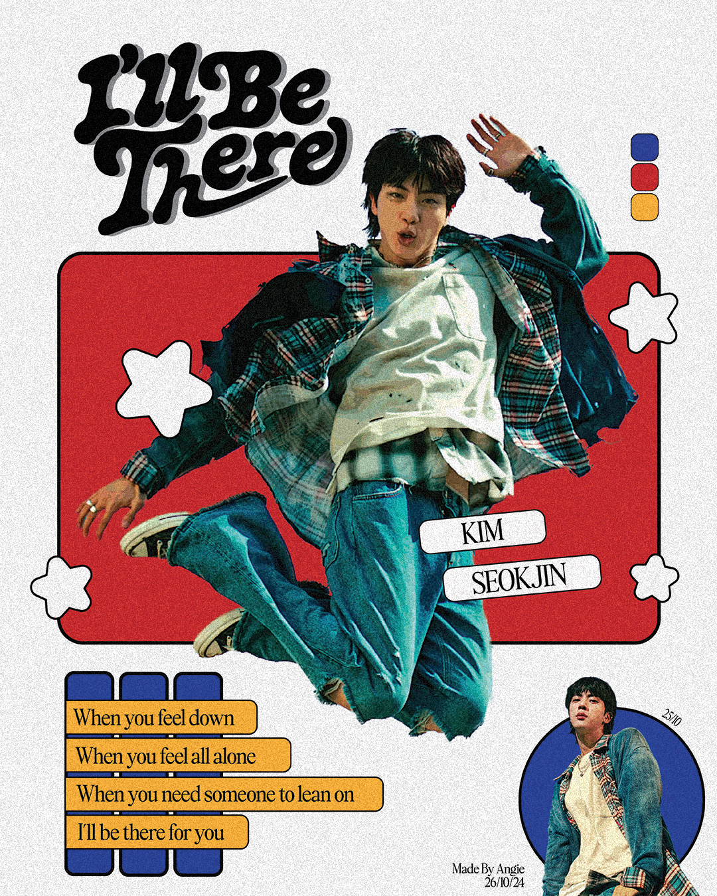
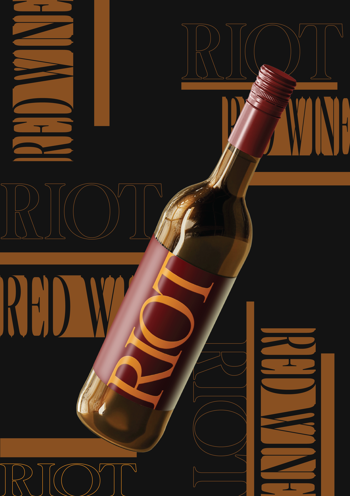

Magazine Cover
Inspired by magazine covers, I designed this poster capturing a confident old woman. After editing the picture and adding texts, I have created this poster.

Sonorous
I made this poster based on the meaning of "Sonorous." It means loud, deep sound, and through colors and waves, I wanted to get that unsettling feeling of being exposed to loud sounds.

I'll Be There
This poster is inspired by the song "I'll Be There" by Jin. The song is a rock song that sounds really fun and full of life and colors. It gives you a happy vibe and just makes you smile. I wanted to show that through this poster.

Neoclassical Poster
This poster follows the Neoclassical era. The architecture during this period was symmetrical, using simple forms and shapes, and this period was a rebellion against the Rococo period. The boldness of this period inspired me further to use such elements and colors.

Rococo Poster
I was intrigued by the Rococo Period, from its colors to its history; it is a style that I do not typically use. Taking this as a challenge, I decided to follow the Rococo period for my poster.

Caving In
I wanted to capture the feeling of being trapped in this poster. The words are linked, not able to escape each other, as are the well in the background and bricks staring up. It gives you the feeling of being lost and tied down.